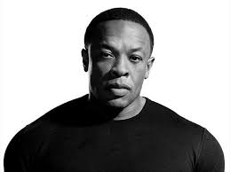

Dr Dre

안드레 로멜레 영(영어: Andre Romelle Young) 1965년 2월 18일 ~ )은 닥터 드레(영어: Dr. Dre)라는 예명으로 활동하고 있는 미국의 래퍼이자 음반 프로듀서이다. 그의 이복 동생 워렌 G 역시 래퍼로 활동하고 있다.
그는 70년대 후반 Cli-N-Tel, Lonzo Williams, DJ Yella 등 클럽 DJ 친구들과 함께 World Class Wreckin' Cru (월드 클래스 랙킨 크루)로 활동했으며, 80년도 중후반쯤 아이스 큐브의 소개로 Eazy-E의 Ruthless Records로 가서 그는 아이스 큐브, Eazy-E, MC Ren, DJ Yella와 함께 힙합 그룹 N.W.A. (Niggaz With Attitude)로 데뷔했다. 그들은 사회적인 문제의 비판을 랩으로 풀어썼다. 그들은 정부의 강력한 제지에도 불구하고 많은 판매고를 올렸다. 그러나 아이스 큐브와 그가 탈퇴함으로써 N.W.A는 해체되게 된다.